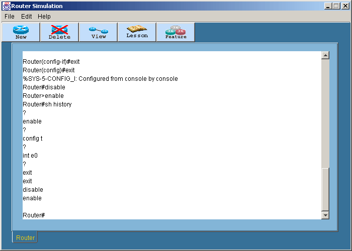
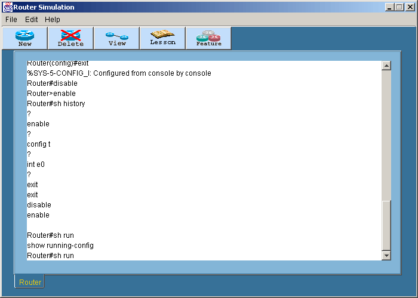

Help and Editing
การทดลองนี้เป็นการทดลองล็อกอินท์เข้าเราเตอร์ที่ต้องการ โดยเริ่มต้นที่ User
EXE level หลังจากนั้นจะทดลองเปลี่ยนโหมดเข้าสู่โหมด Privileged EXE level
และทดลองใช้คำสั่งต่างๆ
- ล็อกอินเข้าสู่เราเตอร์แล้วเปลี่ยนเป็นโหมด Privileged EXE ด้วยคำสั่ง
Enable หรือ En
- เมื่อเข้าสู่ Privileged EXE แล้วให้พิมพ์ access-list
10 permit any แต่อย่าพึ่งกด Enter
- สังเกตว่าขณะนี้เคอเซอร์ชี้อยู่ที่ตำแหน่งท้ายสุดของบรรทัด หลังจากนั้นให้กด
Ctrl+A ทำให้เคอเซอร์ย้ายไปอยู่ที่ตัวอักษรตัวแรกของบรรทัด
- กด Ctrl+E ทำให้เคอเซอร์ย้ายไปอยู่ที่ตำแหน่งท้ายสุดของบรรทัด
- กด Ctrl+B ทำให้เคอเซอร์เคลื่อนย้อนตัวอักษรไปทีละตัว
- กด Ctrl+F ทำให้เคอเซอร์เคลื่อนไปทีละตัวอักษร
- กด Ctrl+P เพื่อใช้คำสั่งที่เคยใช้ไปแล้วเช่นเดียวกับการใช้ลูกศรขึ้น
- พิมพ์คำสั่ง Show History เพื่อดูคำสั่งย้อนหลัง
10 คำสั่ง

- พิมพ์คำสั่ง Terminal no editing แล้วลองทำตามข้อ
3 - 7 สังเกตดูความแตกต่างจากตอนแรก
- พิมพ์คำสั่ง Terminal editing เพื่อ enable
ให้สามารถใช้งานได้ตามเดิม
- พิมพ์คำสั่ง sh run แล้วกด Tab เพื่อดูคำสั่งเต็มๆ

สำหรับโหมดการทำงานทั้งหมดของเราเตอร์สามารถดูได้ในสรุปคำสั่งทั้งหมด
|
 Lesson 2
Lesson 2